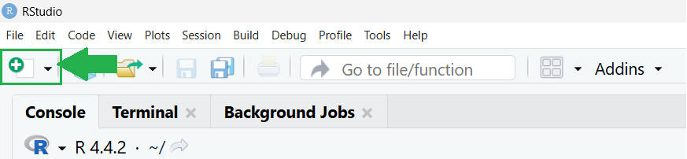
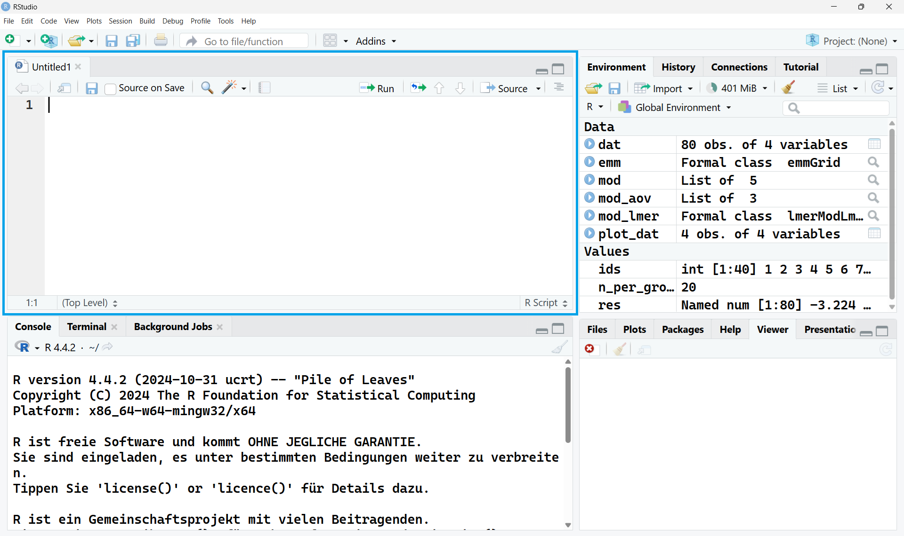
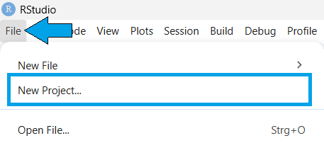
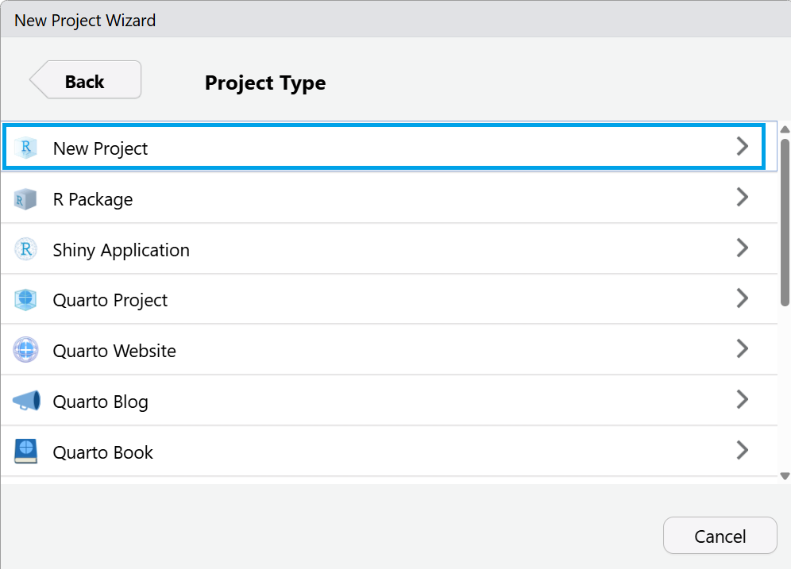
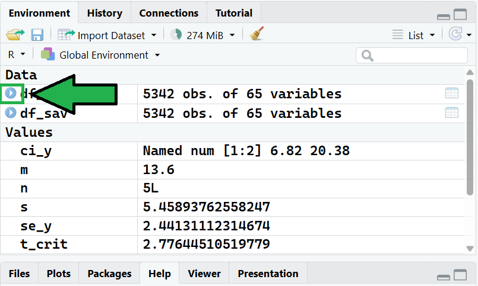
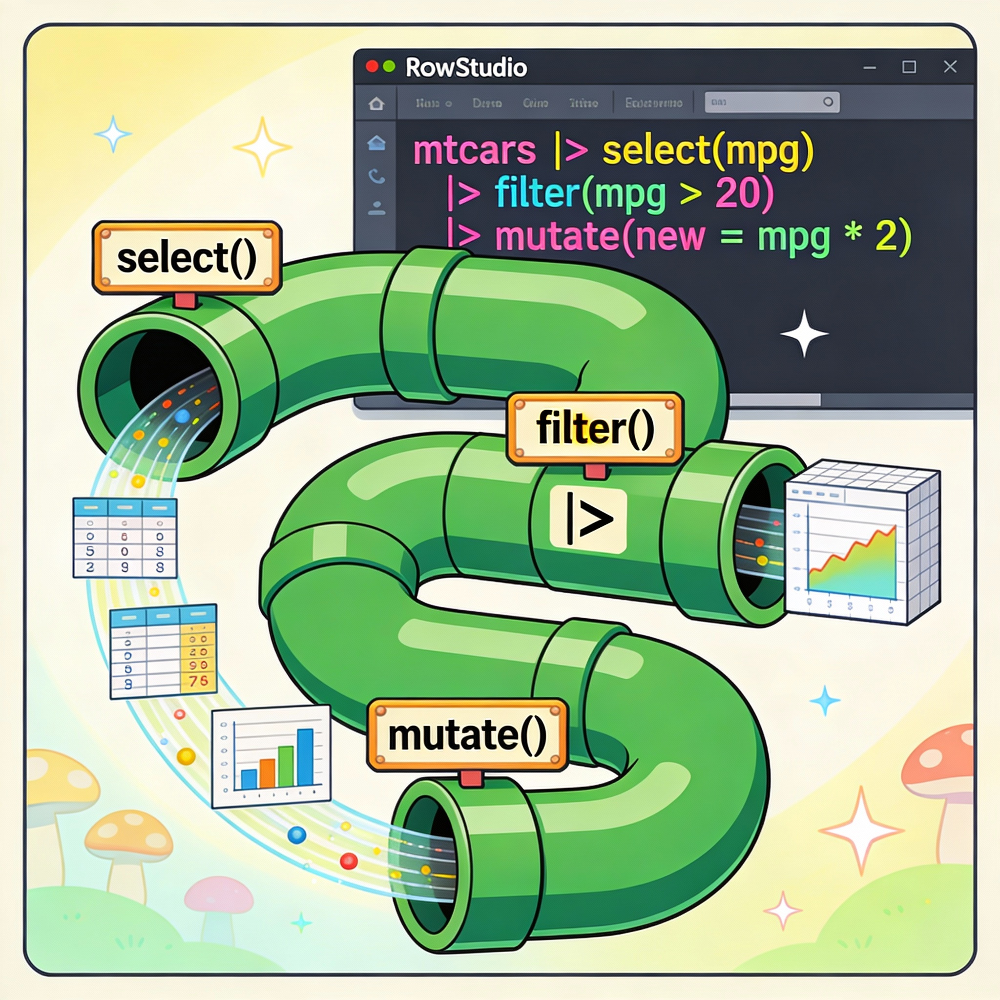

2 + 2[1] 410 / 3[1] 3.333333sqrt(49)[1] 7Grundlagen, Objekte & erste Daten
Willkommen zum Workshop „Einführung in R & RStudio“ 👋 An Tag 1 legen wir die Grundlagen, die wir am zweiten Tag weiter vertiefen.
Ziele für heute - RStudio Oberfläche kennenlernen - verstehen, wie R „denkt“ - erste eigene Objekte und Daten erzeugen
R ist eine freie Programmiersprache, mit der man Daten analysieren, auswerten und grafisch darstellen kann.
Du kannst mit R zum Beispiel:
R wird häufig in den Sozialwissenschaften, der Psychologie, der Medizin und vielen anderen Forschungsbereichen genutzt, unabhänging ob quantitativ oder qualitativ gearbeitet wird. Der große Vorteil von R ist, dass alle Analyseschritte transparent, nachvollziehbar und reproduzierbar sind – man kann also genau sehen, wie ein Ergebnis entstanden ist.
RStudio ist keine eigene Programmiersprache, sondern ein Programm, das dir die Arbeit mit R erleichtert. Man kann sich RStudio wie einen Schreibtisch für R vorstellen.
RStudio hilft dir dabei:
Ohne RStudio müsstest du R über ein sehr einfaches Fenster bedienen. Mit RStudio bekommst du eine strukturierte Oberfläche, die besonders für Einsteiger:innen viel angenehmer ist.
Schauen wir uns zunächst die R Oberfläche (ohne RStudio) an.


Was sehen wir hier?
Hinweis
Alles, was du in die Konsole eingibst, wird sofort von R ausgeführt.
Das Ergebnis siehst du direkt unter der eingegebenen Zeile.
Beispiel
13eina ein13+15ABER
Wir brauchen R GUI nicht, sondern nutzen RStudio!
Schauen wir uns nun die Oberfläche von RStudio an. Startet einfach RStudio (nicht R GUI!). Ihr müsst nun das folgende Bild sehen:

Wir schauen uns nun die Menü-Leiste von RStudio an:

Orange – die Menü-Leiste
In der Menü-Leiste findest du alle wichtigen Funktionen von RStudio übersichtlich nach Themen sortiert. Hier kannst du zum Beispiel Dateien öffnen und speichern, Einstellungen ändern, Codes ausführen oder Hilfe aufrufen. Das Aussehen deines RStudios kannst du auch hier anpassen!
Grün – die Schnellzugriff-Leiste
Die Schnellzugriff-Leiste enthält häufig genutzte Funktionen als Symbole. Damit kannst du z. B. schnell neue Dateien erstellen, Skripte speichern oder Codes ausführen, ohne durch Menüs zu klicken.
RStudio ist in vier Arbeitsbereiche (Panes/Paneele) aufgeteilt. Jeder Bereich hat eine eigene Aufgabe. Aber jetzt gerade siehst du nur drei Bereiche. Ich zeige dir jetzt erstmal, wie du die vier Bereiche bekommst!
Hierfür gehst du zunächst in die Schnellzugriffs-Leiste und klickst auf das Symbol ganz links, das weiße Blatt mit dem Plus.

Anschließend öffnet sich ein Drop-Down und du kannst jetzt schon sehen, was du alles mit RStudio machen kannst.

Wir wollen aber ein neues **R Script erstellen**, daher klicken wir auch da drauf!
Übrigens diese Workshopseite wurde komplett mit RStudio und Quarto Markdowns erstellt.
Jetzt sollte dein RStudio so aussehen:


Hier schreibst du deinen Code in Skripten.
👉 Merke:
Alles Wichtige gehört ins Skript, nicht nur in die Konsole.

Die Konsole kennen wir im Grunde schon. Wie du vielleicht schon erkannt hast, ist es die selbe Konsole wie bei R GUI.
👉 Code aus dem Skript kann mit Run oder Strg + Enter ausgeführt werden.

Im Environment siehst du:
In der History findest du:
👉 So behältst du den Überblick, was gerade „im Speicher“ liegt.

Dieser Bereich zeigt dir:
👉 Hier findest du fast alles, was R zusätzlich ausgibt und wo es gespeichert ist.
Im nächsten Abschnitt legen wir unser erstes Projekt an!
Ein Projekt hilft dir, strukturiert und reproduzierbar zu arbeiten.
👉 Merke:
Ein neues Projekt = ein neuer, sauberer Arbeitskontext.
Typischer Anfängerfehler
Viele arbeiten ohne Projekt und laden Dateien „irgendwoher“.
Das führt oft zu:
👉 Gewöhne dir an:
Für jedes Projekt ein eigenes RStudio-Projekt anzulegen.
r_workshop_tag1) Schritt 1:
File → New Project…
 Schritt 2:
Schritt 2:
New Directory
 Schritt 3:
New Project
 Schritt 4 bis 6:
Schritt 4 bis 6:
Name vergeben, Speicherort wählen & Create Project
👉 Tipp:
Der Projektname sollte keine Leerzeichen enthalten
(z. B. r_workshop_tag1 statt R Workshop Tag 1)
RStudio startet nun neu – du arbeitest jetzt innerhalb deines Projekts.
Nachdem wir nun ein Projekt angelegt haben, beginnen wir mit dem eigentlichen Arbeiten in einem R Script.
Ein Script ist eine Textdatei, in der du deine Befehle sammelst und speicherst. So kannst du: - deine Arbeit nachvollziehen - Code später wiederverwenden - Analysen Schritt für Schritt dokumentieren
RStudio bietet viele Möglichkeiten, mit R zu arbeiten. Wir starten bewusst sehr einfach, um ein Gefühl dafür zu bekommen, wie R reagiert.
Mit Strg + Enter wird der Befehl in der Zeile ausgeführt, in der dein Cursor steht –
du musst den Code nicht markieren und nicht auf „Run“ klicken.
Zum Einstieg kannst du RStudio wie einen Taschenrechner benutzen.
Du gibst einen Befehl ein – R rechnet – und gibt das Ergebnis zurück. So lernst du schnell:
2 + 2[1] 410 / 3[1] 3.333333sqrt(49)[1] 7Befehle, die du nur in der Konsole eingibst, sind schnell wieder weg –
du musst später mühsam hochscrollen, um sie zu finden.
Schreibst du deine Rechnungen in ein R Script, bleiben sie erhalten:
((8 + 4)^2 - 10) / 2.sqrt(196) + 3^3.Beobachte, was gleich ist und was sich unterscheidet.
#Aufgabe 1
((8 + 4)^2 - 10) / 2[1] 67#Aufgabe 2
sqrt(196) + 3^3[1] 41R arbeitet objektorientiert: Alles, was du erzeugst, kann ein Objekt sein und bekommt einen Namen.
x <- 5
y <- c(23, 12, 11, 9, 13)<- ist der Zuweisungspfeil: Er weist den Wert rechts dem Namen links zu.c() steht für combine: Damit fasst R mehrere Werte zu einem Vektor zusammen.y ist der Name des Objekts. Das Objekt selbst ist ein Vektor, der mehrere Zahlen enthält.Funktionen sind vordefinierte Befehle, mit denen R etwas für uns erledigt.
Sie nehmen einen oder mehrere Eingabewerte entgegen, führen damit eine bestimmte Operation aus und geben ein Ergebnis zurück.
Man kann sich Funktionen wie Werkzeuge vorstellen:
Je nach Aufgabe benutzen wir ein anderes Werkzeug.
In R werden Funktionen immer mit runden Klammern () aufgerufen.
Im Folgenden verwenden wir einige grundlegende Funktionen, die R bereits mitbringt:
sum(y)[1] 68mean(y)[1] 13.6sd(y)[1] 5.458938median(y)[1] 12mad(y)[1] 1.4826min(y)[1] 9max(y)[1] 23range(y)[1] 9 23length(y)[1] 5sum() – berechnet die Summe aller Wertemean() – berechnet den Mittelwertsd() – berechnet die Standardabweichungmedian() – gibt den Median zurückmad() – berechnet die mittlere absolute Abweichungrange() – gibt kleinsten und größten Wert ausmin() – kleinster Wertmax() – größter Wertlength() – Anzahl der WerteEs gibt eine Vielzahl Base R Funktionen, ihr könnt sie gerne erkundigen!
Funktionen können nicht nur einzeln verwendet werden, sondern auch miteinander kombiniert werden.
Das Ergebnis einer Funktion kann dabei direkt als Eingabe für eine andere Funktion dienen.
Zum Beispiel können wir den Mittelwert berechnen und anschließend daraus die Wurzel ziehen,
oder wir kombinieren mehrere Funktionen, um neue Kennwerte zu berechnen.
sqrt(mean(y))[1] 3.687818max(y) - min(y)[1] 14In der nächsten Übung nutzen wir diese Grundfunktionen,
um eigene Kennwerte zu berechnen und die Ergebnisse als Objekte zu speichern.
Nutze den Vektor y und berechne folgende Kennwerte:
Speichere alle Ergebnisse als eigene Objekte, z. B.: se_y, var_y, z_y, ci_y.
Du darfst dir für die Berechnung Hilfsobjekte anlegen.
Standardfehler des Mittelwerts
\[ SE = \frac{sd(x)}{\sqrt{n}} \]
Varianz (Stichprobe)
\[ \text{Var} = \frac{1}{n - 1} \sum (x - \bar{x})^2 \]
z-Standardisierung
\[ z = \frac{x - \bar{x}}{sd(x)} \]
95%-Konfidenzintervall des Mittelwerts
\[ \bar{x} \pm t_{0.975,\,n-1} \cdot SE \]
qt(0.975, df = n - 1)# Hilfsobjekte
n <- length(y) # Anzahl der Werte
m <- mean(y) # Mittelwert
s <- sd(y) # Standardabweichung
# 1) Standardfehler des Mittelwerts
se_y <- s / sqrt(n)
se_y[1] 2.441311# 2) Varianz (Stichprobe)
var_y <- sum((y - m)^2) / (n - 1)
var_y[1] 29.8# 3) z-standardisierte Werte
z_y <- (y - m) / s
z_y[1] 1.7219468 -0.2930973 -0.4762831 -0.8426548 -0.1099115# 4) 95%-Konfidenzintervall des Mittelwerts
t_crit <- qt(0.975, df = n - 1)
ci_y <- c(
lower = m - t_crit * se_y,
upper = m + t_crit * se_y
)
ci_y lower upper
6.821834 20.378166 Mean(y) statt mean(y)mean y statt mean(y)<- vergessen oder = inkonsistent verwendetIn R ist es wichtig zu wissen, was für eine Art von Daten wir vor uns haben
und wie diese Daten organisiert sind.
Deshalb unterscheiden wir zwischen Datentypen und Datenstrukturen.
Beides bestimmt, wie wir mit Daten rechnen, sie verändern und analysieren können.
Datentypen legen fest, welche Art von Werten in einem Objekt gespeichert ist.
R behandelt Zahlen, Text und logische Werte unterschiedlich – je nach Datentyp.
Der Datentyp ist wichtig, weil er bestimmt, - welche Berechnungen möglich sind - wie R die Werte interpretiert - welche Funktionen sinnvoll angewendet werden können
numeric / double
Zahlen mit Dezimalstellen, z. B. 3.14 oder -7.5.
Wird für die meisten Berechnungen verwendet.
integer
Ganze Zahlen ohne Dezimalstellen, z. B. 1L oder 42L.
Kommt seltener vor, ist aber wichtig bei Zählvariablen.
character
Textwerte, z. B. "Anna" oder "Deutschland".
Mit Text kann man nicht rechnen.
logical
Logische Werte: TRUE oder FALSE.
Wird häufig bei Bedingungen oder Filtern genutzt.
factor
Kategorische Daten mit festen Ausprägungen, z. B. Geschlecht oder Schulabschluss.
Datenstrukturen beschreiben, wie mehrere Werte in R zusammengefasst und organisiert sind.
Sie legen fest, ob Daten einzeln, als einfache Liste oder als Tabelle gespeichert werden.
Welche Datenstruktur wir verwenden, ist wichtig,
weil sie bestimmt, wie wir auf Daten zugreifen, sie verändern und analysieren können.
Vektor
Eine geordnete Sammlung von Werten gleichen Datentyps.
Grundlage für fast alle anderen Datenstrukturen in R.
Matrix
Eine rechteckige Tabelle aus Werten gleichen Datentyps (meist Zahlen).
Wird vor allem für mathematische und statistische Berechnungen verwendet.
Data Frame / tibble
Eine Tabelle mit Zeilen (Fälle) und Spalten (Variablen).
Standardformat für Datensätze in der empirischen Forschung.
Datenstrukturen in R bauen in gewisser Weise aufeinander auf.
Am Anfang steht der Vektor:
Ein Vektor ist eine einfache, geordnete Reihe von Werten gleichen Datentyps.
Aus Vektoren lassen sich Matrizen bilden:
Eine Matrix ist eine Sammlung mehrerer gleich langer Vektoren, die rechteckig angeordnet sind.
Ein Data Frame geht einen Schritt weiter:
Auch hier bestehen die Spalten aus Vektoren, die Spalten dürfen aber unterschiedliche Datentypen haben.
So lassen sich reale Datensätze mit Zahlen, Text und Kategorien in einer Tabelle abbilden.
Die Datenstrukturen bauen konzeptionell aufeinander auf,
sie werden in der Praxis nicht automatisch ineinander umgewandelt
In R können wir jederzeit überprüfen, was für eine Art von Objekt wir im Environment haben. Das ist besonders hilfreich, wenn wir mit vielen Objekten arbeiten oder unsicher sind, wie R ein Objekt interpretiert.
class(x) - gibt uns eine allgemeine Einordnung des Objekts.
typeof(x) - detaillierter wie class, zeigt wie R das Objekt intern speichertstr(x) - gibt einen Überblick über Aufbau und Inhalt eines Objekts.Für Funktionen: - ?mean() - Öffnet die Hilfeseite zur Funktion mean() (Beschreibung, Argumente, Beispiele).
Im Folgenden betrachten wir unsere zuvor erstellten Objekte x und y genauer und nutzen sie, um die entsprechenden Befehle anzuwenden.
class(x)[1] "numeric"class(y)[1] "numeric"typeof(x)[1] "double"typeof(y)[1] "double"str(x) num 5str(y) num [1:5] 23 12 11 9 13Im bisherigen Verlauf haben wir mehrere Objekte und Hilfsobjekte erstellt.
Überprüfe für jedes dieser Objekte
Nutze dafür die Befehle
class(), typeof() und str().
Überlege dir:
Ziel ist es, ein besseres Gefühl dafür zu bekommen,
wie R unterschiedliche Ergebnisse speichert.
# Mittelwert
class(m)[1] "numeric"typeof(m)[1] "double"str(m) num 13.6# Anzahl der Werte
class(n)[1] "integer"typeof(n)[1] "integer"str(n) int 5# Standardabweichung
class(s)[1] "numeric"typeof(s)[1] "double"str(s) num 5.46# Standardfehler
class(se_y)[1] "numeric"typeof(se_y)[1] "double"str(se_y) num 2.44# Varianz
class(var_y)[1] "numeric"typeof(var_y)[1] "double"str(var_y) num 29.8# z-standardisierte Werte
class(z_y)[1] "numeric"typeof(z_y)[1] "double"str(z_y) num [1:5] 1.722 -0.293 -0.476 -0.843 -0.11# Konfidenzintervall
class(ci_y)[1] "numeric"typeof(ci_y)[1] "double"str(ci_y) Named num [1:2] 6.82 20.38
- attr(*, "names")= chr [1:2] "lower" "upper"class()typeof()str()Bisher haben wir mit einzelnen Objekten und Vektoren gearbeitet. In der Praxis bestehen Datensätze jedoch aus mehreren Variablen, die gemeinsam eine Gruppe von Fällen beschreiben.
Im nächsten Schritt erstellen wir deshalb mehrere Vektoren (z. B. Alter, Geschlecht oder Körpergröße) und führen sie zu einem kleinen Datensatz zusammen.
Dabei lernst du, - wie mehrere Vektoren sinnvoll angelegt werden und
- wie aus einzelnen Variablen eine tabellarische Struktur entsteht.
Wir legen nun unsere neuen Vektoren (= Variablen)** an:
# Alter
age <- c(23, 29, 35, 41, 27, 33)
# Geschlecht
gender <- c("female", "male", "female", "male", "female", "male")
# Haarfarbe
hair_color <- c("brown", "blonde", "black", "brown", "red", "black")
# Körpergröße in cm
height_cm <- c(165, 180, 172, 178, 160, 185)
# Gewicht in kg
weight_kg <- c(60, 82, 70, 88, 55, 90)
# Beruf
occupation <- c(
"student",
"engineer",
"teacher",
"manager",
"student",
"researcher"
)Jeder dieser Vektoren stellt eine Variable dar.
Die einzelnen Werte gehören jeweils zur gleichen Person
(d. h. zur gleichen Zeile im späteren Datensatz).
Alle Vektoren müssen die gleiche Länge haben.
Übeprüfe das!
Im nächsten Schritt fassen wir die einzelnen Variablen zu einem gemeinsamen Datensatz zusammen.
Dabei verwenden wir zunächst Base R, also Funktionen, die ohne zusätzliche Pakete verfügbar sind.
data <- data.frame(
age = age,
gender = gender,
hair_color = hair_color,
height_cm = height_cm,
weight_kg = weight_kg,
occupation = occupation
)
data age gender hair_color height_cm weight_kg occupation
1 23 female brown 165 60 student
2 29 male blonde 180 82 engineer
3 35 female black 172 70 teacher
4 41 male brown 178 88 manager
5 27 female red 160 55 student
6 33 male black 185 90 researcherAufbau der Funktion data.frame():
data.frame(name1 = name2)
name1 = Spaltenname im Datensatzname2 = Objektname aus dem EnvironmentDie einzelnen Vektoren sind nun zu einem Datensatz zusammengeführt worden:
data.frame() ist die klassische Tabellenstruktur in Base R
und bildet die Grundlage für viele weitere Analyseschritte.
Auch ein einzelner Wert ist in R ein Vektor der Länge 1. Mit der c() Funktion können wir einzelne Werte zu einem Vektor zusammenfassen
Bisher haben wir einen Datensatz erstellt mit sechs Variablen. Erstelle nun zwei weitere Variablen und füge diesen zu einem Datensatz hinzu. Nenne die eine Variable numbersund die andere chars.
numbers <- c(12,5,17,6,75,22)
chars <- c("Anna", "Alex", "Beate", "Bobby", "Christina", "Chester")
data <- data.frame(
age = age,
gender = gender,
hair_color = hair_color,
height_cm = height_cm,
weight_kg = weight_kg,
occupation = occupation,
nmbrs = numbers,
chars = chars
)Komma vergessen oder zu viel gesetzt
→ führt oft zu unerwarteten Fehlermeldungen.
Falscher Objektname
→ R unterscheidet zwischen Groß- und Kleinschreibung
(Age ≠ age).
Unterschiedliche Längen der Vektoren
→ Alle Variablen müssen gleich viele Werte haben.
Pakete sind Erweiterungen von R.
Sie enthalten zusätzliche Funktionen, Datensätze und Dokumentationen,
die bestimmte Aufgaben erleichtern oder überhaupt erst möglich machen.
R bringt bereits viele grundlegende Funktionen mit (Base R).
Für komplexere oder spezialisierte Aufgaben greifen wir jedoch häufig auf Pakete zurück.
Bevor wir ein Paket nutzen können, müssen wir es einmal installieren.
Die Installation erfolgt über das Internet und wird lokal auf dem Rechner gespeichert.
install.packages("tidyverse")
install.packages("psych")install.packages() muss nur einmal ausgeführt werden.
Danach ist das Paket in der Regel dauerhaft auf deinem Rechner verfügbar.
Nach der Installation müssen Pakete in jeder neuen R-Sitzung geladen werden, damit ihre Funktionen zur Verfügung stehen.
library(tidyverse)
library(psych)install.packages() → einmal installierenlibrary() → in jeder Sitzung ladenDas tidyverse ist eine Sammlung mehrerer Pakete,
die besonders für Datenaufbereitung, Analyse und Visualisierung entwickelt wurden.
Es bietet:
Typische tidyverse-Pakete sind zum Beispiel:
dplyr (Datenaufbereitung)ggplot2 (Visualisierung)readr (Datenimport)Wir werden das tidyverse später als Alternative zu Base R nutzen.
Das Paket psych wird häufig in den Sozial- und Verhaltenswissenschaften verwendet.
Es enthält unter anderem:
psych ergänzt Base R um viele Funktionen, die in der empirischen Forschung regelmäßig benötigt werden.
Bisher haben wir Datensätze selbst erstellt, um zu verstehen,
wie Daten in R strukturiert sind (Vektoren, Data Frames, Variablen).
In der Praxis müssen wir Datensätze jedoch nicht von Hand anlegen.
Häufig stammen Daten aus externen Quellen, zum Beispiel aus:
Diese Daten werden meist über eine Export-Funktion als Datei bereitgestellt (z. B. CSV oder Excel) und anschließend in R importiert.
.csv) – sehr verbreitet, einfach, textbasiert.xlsx) – häufig in der Praxis.sav) – vor allem in den SozialwissenschaftenBeim Importieren von Daten können verschiedene Hürden auftreten.
Diese sind normal und gehören zur Arbeit mit realen Datensätzen dazu.
-99, 999)Um den Datenimport möglichst übersichtlich und zuverlässig zu gestalten,
verwenden wir ab jetzt Funktionen aus dem tidyverse.
Diese bieten: - klare und gut lesbare Befehle
- sinnvolle Standardannahmen
- eine einfache erste Prüfung der importierten Daten
Wir haben bewusst zuerst mit Base R gearbeitet,
um die grundlegenden Strukturen zu verstehen.
Jetzt nutzen wir das tidyverse als komfortablere Alternative
für reale Daten und typische Workflows.
Im nächsten Schritt importieren wir einen Datensatz aus einer SAV-Datei
und prüfen anschließend, ob der Import korrekt funktioniert hat.
Für die folgenden Schritte arbeiten wir mit einem vorgegebenen Datensatz.
Bitte lade den Datensatz herunter und speichere ihn in deinem Projektordner, zum Beispiel im Unterordner data/.
➡️ Workshop-Datensatz herunterladen (CSV)
➡️ Workshop-Datensatz herunterladen (SPSS)
Hier kannst du das Codebuch zum Datensatz runterladen, für eine bessere Übersicht, über die Variablen im Datensatz.
➡️ Codebuch Workshop Datensatz (PDF)
Achte darauf, die Datei nicht irgendwo auf dem Rechner, sondern im Projektordner zu speichern.
Nur so funktionieren die folgenden Import-Befehle ohne Probleme.
Jetzt importieren wir die Daten.
# Falls nicht schon geschehen, lade folgende Pakete:
library(tidyverse)
library(haven)
# Importiere nun die Datensätz
df_csv <- read_csv("assets/data/datensatz_workshop.csv")
df_spss <- read_sav("assets/data/spss_datensatz_workshop.sav")Was fällt dir auf, wenn du die Datensätze vergleichst?
| Problem | Mögliche Ursache | Mögliche Lösung |
|---|---|---|
cannot open file |
falscher Pfad | Projektordner prüfen, Datei-Pfad anpassen |
| Umlaute „kaputt“ | Encoding | locale = locale(encoding = "UTF-8") testen |
alles character |
Typ falsch erkannt | nachträglich mit mutate() umwandeln |
Nachdem wir den Datensatz erfolgreich importiert haben, beginnt ein zentraler Schritt der Datenanalyse: die Datenaufbereitung.
Daten liegen in der Praxis selten sofort in der Form vor, in der sie analysiert oder ausgewertet werden können. Häufig müssen Variablen ausgewählt, Fälle gefiltert, Werte umkodiert oder neue Variablen erstellt werden.
Für diese Arbeitsschritte verwenden wir das Paket dplyr.
Bevor wir Daten aufbereiten oder verändern, sollten wir uns immer zuerst einen Überblick über den Datensatz verschaffen.
So können wir prüfen, - ob die Daten korrekt importiert wurden, - welche Variablen enthalten sind, - welche Datentypen vorliegen, - und ob es offensichtliche Auffälligkeiten gibt.
summary(df_csv)
summary(df_spss)summary(df_csv) eastwest german sex age
Min. :1.000 Min. :1.000 Min. :1.000 Min. :18.00
1st Qu.:1.000 1st Qu.:1.000 1st Qu.:1.000 1st Qu.:39.00
Median :1.000 Median :1.000 Median :2.000 Median :55.00
Mean :1.334 Mean :1.114 Mean :1.509 Mean :53.27
3rd Qu.:2.000 3rd Qu.:1.000 3rd Qu.:2.000 3rd Qu.:67.00
Max. :2.000 Max. :3.000 Max. :3.000 Max. :96.00
NA's :30 NA's :20 NA's :41
agec dg10 dg03 educ isced97
Min. :1.000 Min. : 1.00 Min. :1.000 Min. :1.00 Min. :1.000
1st Qu.:2.000 1st Qu.: 6.00 1st Qu.:1.000 1st Qu.:3.00 1st Qu.:3.000
Median :3.000 Median : 8.00 Median :4.000 Median :3.00 Median :4.000
Mean :3.077 Mean :14.44 Mean :2.947 Mean :3.65 Mean :3.996
3rd Qu.:4.000 3rd Qu.:15.00 3rd Qu.:4.000 3rd Qu.:5.00 3rd Qu.:5.000
Max. :6.000 Max. :95.00 Max. :4.000 Max. :7.00 Max. :6.000
NA's :41 NA's :30 NA's :420 NA's :170 NA's :69
iscd11 work isco08 siops08 isei08
Min. :1.000 Min. :1.00 Min. : 110 Min. :13.00 Min. :11.74
1st Qu.:3.000 1st Qu.:1.00 1st Qu.:2423 1st Qu.:42.09 1st Qu.:36.92
Median :4.000 Median :2.00 Median :3322 Median :48.37 Median :54.55
Mean :4.574 Mean :2.38 Mean :3928 Mean :47.93 Mean :53.03
3rd Qu.:7.000 3rd Qu.:4.00 3rd Qu.:5153 3rd Qu.:54.64 3rd Qu.:70.34
Max. :8.000 Max. :4.00 Max. :9629 Max. :78.16 Max. :88.96
NA's :69 NA's :56 NA's :2642 NA's :2642 NA's :2642
dw15 dw16 dw19c dw03 mstat
Min. : 4.00 Min. :1.000 Min. :1.000 Min. :1.00 Min. :1.000
1st Qu.:35.00 1st Qu.:1.000 1st Qu.:3.000 1st Qu.:2.00 1st Qu.:1.000
Median :40.00 Median :1.000 Median :4.000 Median :2.00 Median :1.000
Mean :38.53 Mean :1.212 Mean :3.778 Mean :2.29 Mean :2.449
3rd Qu.:42.00 3rd Qu.:1.000 3rd Qu.:5.000 3rd Qu.:2.00 3rd Qu.:5.000
Max. :87.50 Max. :3.000 Max. :6.000 Max. :6.00 Max. :9.000
NA's :2414 NA's :2705 NA's :4811 NA's :3091 NA's :136
dp01 di01a di02a incc
Min. :1.000 Min. : 20 Min. : 1.00 Min. : 1.00
1st Qu.:1.000 1st Qu.: 1450 1st Qu.: 9.00 1st Qu.:10.00
Median :2.000 Median : 2200 Median :13.00 Median :14.00
Mean :1.557 Mean : 2461 Mean :13.04 Mean :13.57
3rd Qu.:2.000 3rd Qu.: 3000 3rd Qu.:16.00 3rd Qu.:17.00
Max. :2.000 Max. :15000 Max. :26.00 Max. :26.00
NA's :3139 NA's :4141 NA's :1994 NA's :793
di01b di02b di05 di06
Min. : 446 Min. : 1.00 Min. : 390 Min. : 1.00
1st Qu.: 3000 1st Qu.:16.00 1st Qu.: 2400 1st Qu.:14.00
Median : 4000 Median :19.00 Median : 3500 Median :18.00
Mean : 4602 Mean :18.77 Mean : 4050 Mean :17.43
3rd Qu.: 5500 3rd Qu.:22.00 3rd Qu.: 5000 3rd Qu.:21.00
Max. :50000 Max. :26.00 Max. :50000 Max. :26.00
NA's :4511 NA's :2856 NA's :4257 NA's :2141
hhincc dh01 dh11 aq01
Min. : 1.00 Min. :1.000 Min. :1.000 Min. :1.000
1st Qu.:15.00 1st Qu.:1.000 1st Qu.:1.000 1st Qu.:4.000
Median :19.00 Median :1.000 Median :1.000 Median :6.000
Mean :17.85 Mean :1.218 Mean :1.713 Mean :5.469
3rd Qu.:21.00 3rd Qu.:1.000 3rd Qu.:2.000 3rd Qu.:7.000
Max. :26.00 Max. :2.000 Max. :9.000 Max. :8.000
NA's :1056 NA's :153 NA's :1300 NA's :199
gs01 gd01 gd02 dg13 dg08
Min. :1.000 Min. :1935 Min. : 0.00 Min. :1.000 Min. :1.00
1st Qu.:2.000 1st Qu.:1994 1st Qu.:10.00 1st Qu.:1.000 1st Qu.:1.00
Median :3.000 Median :2011 Median :25.00 Median :2.000 Median :2.00
Mean :2.748 Mean :3746 Mean :29.47 Mean :2.529 Mean :1.64
3rd Qu.:4.000 3rd Qu.:2021 3rd Qu.:46.00 3rd Qu.:4.000 3rd Qu.:2.00
Max. :5.000 Max. :9000 Max. :93.00 Max. :6.000 Max. :2.00
NA's :142 NA's :1953 NA's :1958 NA's :2845 NA's :3095
dg09 dg11 ls01 id02
Min. :1.000 Min. :1.000 Min. : 0.000 Min. :1.000
1st Qu.:1.000 1st Qu.:1.000 1st Qu.: 6.000 1st Qu.:2.000
Median :2.000 Median :2.000 Median : 8.000 Median :3.000
Mean :1.638 Mean :1.611 Mean : 7.256 Mean :2.883
3rd Qu.:2.000 3rd Qu.:2.000 3rd Qu.: 8.000 3rd Qu.:3.000
Max. :2.000 Max. :2.000 Max. :10.000 Max. :5.000
NA's :4229 NA's :1938 NA's :196 NA's :201
id01 im01 im17 im18 im19
Min. :1.000 Min. :1.00 Min. :1.000 Min. :1.000 Min. :1.000
1st Qu.:2.000 1st Qu.:1.00 1st Qu.:2.000 1st Qu.:2.000 1st Qu.:2.000
Median :3.000 Median :2.00 Median :2.000 Median :2.000 Median :3.000
Mean :2.599 Mean :1.54 Mean :2.347 Mean :2.487 Mean :2.683
3rd Qu.:3.000 3rd Qu.:2.00 3rd Qu.:3.000 3rd Qu.:3.000 3rd Qu.:3.000
Max. :4.000 Max. :2.00 Max. :4.000 Max. :4.000 Max. :4.000
NA's :213 NA's :1864 NA's :102 NA's :106 NA's :166
im20 im21 iw04 pd11 pi07
Min. :1.000 Min. :1.000 Min. :1.000 Min. :1.00 Min. :1.000
1st Qu.:2.000 1st Qu.:2.000 1st Qu.:1.000 1st Qu.:1.00 1st Qu.:1.000
Median :3.000 Median :3.000 Median :1.000 Median :2.00 Median :1.000
Mean :2.708 Mean :2.944 Mean :1.572 Mean :1.63 Mean :1.493
3rd Qu.:3.000 3rd Qu.:4.000 3rd Qu.:2.000 3rd Qu.:2.00 3rd Qu.:2.000
Max. :4.000 Max. :4.000 Max. :4.000 Max. :4.00 Max. :2.000
NA's :152 NA's :112 NA's :74 NA's :81 NA's :1923
pi01 pi02 lp03 lp04 lp05
Min. :1.000 Min. :1.00 Min. :1.000 Min. :1.00 Min. :1.000
1st Qu.:1.000 1st Qu.:2.00 1st Qu.:1.000 1st Qu.:1.00 1st Qu.:1.000
Median :1.000 Median :2.00 Median :1.000 Median :2.00 Median :1.000
Mean :1.155 Mean :2.21 Mean :1.297 Mean :1.68 Mean :1.269
3rd Qu.:1.000 3rd Qu.:3.00 3rd Qu.:2.000 3rd Qu.:2.00 3rd Qu.:2.000
Max. :2.000 Max. :3.00 Max. :2.000 Max. :2.00 Max. :2.000
NA's :54 NA's :894 NA's :210 NA's :178 NA's :160
lp06 hs01 hs04 hs05
Min. :1.000 Min. :1.000 Min. :1.000 Min. :1.000
1st Qu.:1.000 1st Qu.:2.000 1st Qu.:2.000 1st Qu.:3.000
Median :1.000 Median :2.000 Median :3.000 Median :3.000
Mean :1.376 Mean :2.437 Mean :3.036 Mean :3.356
3rd Qu.:2.000 3rd Qu.:3.000 3rd Qu.:4.000 3rd Qu.:4.000
Max. :2.000 Max. :5.000 Max. :5.000 Max. :5.000
NA's :164 NA's :63 NA's :1793 NA's :1792
hs06 hs07 hs09 land
Min. :1.000 Min. :1.000 Min. :1.000 Min. : 10.00
1st Qu.:2.000 1st Qu.:2.000 1st Qu.:3.000 1st Qu.: 50.00
Median :2.000 Median :3.000 Median :4.000 Median : 80.00
Mean :2.614 Mean :2.921 Mean :4.044 Mean : 86.99
3rd Qu.:3.000 3rd Qu.:3.000 3rd Qu.:5.000 3rd Qu.:120.00
Max. :5.000 Max. :5.000 Max. :5.000 Max. :160.00
NA's :1797 NA's :1805 NA's :1791
bik gkpol
Min. : 1.00 Min. :1.000
1st Qu.: 5.00 1st Qu.:3.000
Median : 8.00 Median :4.000
Mean : 7.07 Mean :4.313
3rd Qu.:10.00 3rd Qu.:6.000
Max. :10.00 Max. :7.000
NA's :174 NA's :68 summary(df_spss) eastwest german sex age
Min. :1.000 Min. :1.000 Min. :1.000 Min. :18.00
1st Qu.:1.000 1st Qu.:1.000 1st Qu.:1.000 1st Qu.:39.00
Median :1.000 Median :1.000 Median :2.000 Median :55.00
Mean :1.334 Mean :1.114 Mean :1.509 Mean :53.27
3rd Qu.:2.000 3rd Qu.:1.000 3rd Qu.:2.000 3rd Qu.:67.00
Max. :2.000 Max. :3.000 Max. :3.000 Max. :96.00
NA's :30 NA's :20 NA's :41
agec dg10 dg03 educ isced97
Min. :1.000 Min. : 1.00 Min. :1.000 Min. :1.00 Min. :1.000
1st Qu.:2.000 1st Qu.: 6.00 1st Qu.:1.000 1st Qu.:3.00 1st Qu.:3.000
Median :3.000 Median : 8.00 Median :4.000 Median :3.00 Median :4.000
Mean :3.077 Mean :14.44 Mean :2.947 Mean :3.65 Mean :3.996
3rd Qu.:4.000 3rd Qu.:15.00 3rd Qu.:4.000 3rd Qu.:5.00 3rd Qu.:5.000
Max. :6.000 Max. :95.00 Max. :4.000 Max. :7.00 Max. :6.000
NA's :41 NA's :30 NA's :420 NA's :170 NA's :69
iscd11 work isco08 siops08 isei08
Min. :1.000 Min. :1.00 Min. : 110 Min. :13.00 Min. :11.74
1st Qu.:3.000 1st Qu.:1.00 1st Qu.:2423 1st Qu.:42.09 1st Qu.:36.92
Median :4.000 Median :2.00 Median :3322 Median :48.37 Median :54.55
Mean :4.574 Mean :2.38 Mean :3928 Mean :47.93 Mean :53.03
3rd Qu.:7.000 3rd Qu.:4.00 3rd Qu.:5153 3rd Qu.:54.64 3rd Qu.:70.34
Max. :8.000 Max. :4.00 Max. :9629 Max. :78.16 Max. :88.96
NA's :69 NA's :56 NA's :2642 NA's :2642 NA's :2642
dw15 dw16 dw19c dw03 mstat
Min. : 4.00 Min. :1.000 Min. :1.000 Min. :1.00 Min. :1.000
1st Qu.:35.00 1st Qu.:1.000 1st Qu.:3.000 1st Qu.:2.00 1st Qu.:1.000
Median :40.00 Median :1.000 Median :4.000 Median :2.00 Median :1.000
Mean :38.53 Mean :1.212 Mean :3.778 Mean :2.29 Mean :2.449
3rd Qu.:42.00 3rd Qu.:1.000 3rd Qu.:5.000 3rd Qu.:2.00 3rd Qu.:5.000
Max. :87.50 Max. :3.000 Max. :6.000 Max. :6.00 Max. :9.000
NA's :2414 NA's :2705 NA's :4811 NA's :3091 NA's :136
dp01 di01a di02a incc
Min. :1.000 Min. : 20 Min. : 1.00 Min. : 1.00
1st Qu.:1.000 1st Qu.: 1450 1st Qu.: 9.00 1st Qu.:10.00
Median :2.000 Median : 2200 Median :13.00 Median :14.00
Mean :1.557 Mean : 2461 Mean :13.04 Mean :13.57
3rd Qu.:2.000 3rd Qu.: 3000 3rd Qu.:16.00 3rd Qu.:17.00
Max. :2.000 Max. :15000 Max. :26.00 Max. :26.00
NA's :3139 NA's :4141 NA's :1994 NA's :793
di01b di02b di05 di06
Min. : 446 Min. : 1.00 Min. : 390 Min. : 1.00
1st Qu.: 3000 1st Qu.:16.00 1st Qu.: 2400 1st Qu.:14.00
Median : 4000 Median :19.00 Median : 3500 Median :18.00
Mean : 4602 Mean :18.77 Mean : 4050 Mean :17.43
3rd Qu.: 5500 3rd Qu.:22.00 3rd Qu.: 5000 3rd Qu.:21.00
Max. :50000 Max. :26.00 Max. :50000 Max. :26.00
NA's :4511 NA's :2856 NA's :4257 NA's :2141
hhincc dh01 dh11 aq01
Min. : 1.00 Min. :1.000 Min. :1.000 Min. :1.000
1st Qu.:15.00 1st Qu.:1.000 1st Qu.:1.000 1st Qu.:4.000
Median :19.00 Median :1.000 Median :1.000 Median :6.000
Mean :17.85 Mean :1.218 Mean :1.713 Mean :5.469
3rd Qu.:21.00 3rd Qu.:1.000 3rd Qu.:2.000 3rd Qu.:7.000
Max. :26.00 Max. :2.000 Max. :9.000 Max. :8.000
NA's :1056 NA's :153 NA's :1300 NA's :199
gs01 gd01 gd02 dg13 dg08
Min. :1.000 Min. :1935 Min. : 0.00 Min. :1.000 Min. :1.00
1st Qu.:2.000 1st Qu.:1994 1st Qu.:10.00 1st Qu.:1.000 1st Qu.:1.00
Median :3.000 Median :2011 Median :25.00 Median :2.000 Median :2.00
Mean :2.748 Mean :3746 Mean :29.47 Mean :2.529 Mean :1.64
3rd Qu.:4.000 3rd Qu.:2021 3rd Qu.:46.00 3rd Qu.:4.000 3rd Qu.:2.00
Max. :5.000 Max. :9000 Max. :93.00 Max. :6.000 Max. :2.00
NA's :142 NA's :1953 NA's :1958 NA's :2845 NA's :3095
dg09 dg11 ls01 id02
Min. :1.000 Min. :1.000 Min. : 0.000 Min. :1.000
1st Qu.:1.000 1st Qu.:1.000 1st Qu.: 6.000 1st Qu.:2.000
Median :2.000 Median :2.000 Median : 8.000 Median :3.000
Mean :1.638 Mean :1.611 Mean : 7.256 Mean :2.883
3rd Qu.:2.000 3rd Qu.:2.000 3rd Qu.: 8.000 3rd Qu.:3.000
Max. :2.000 Max. :2.000 Max. :10.000 Max. :5.000
NA's :4229 NA's :1938 NA's :196 NA's :201
id01 im01 im17 im18 im19
Min. :1.000 Min. :1.00 Min. :1.000 Min. :1.000 Min. :1.000
1st Qu.:2.000 1st Qu.:1.00 1st Qu.:2.000 1st Qu.:2.000 1st Qu.:2.000
Median :3.000 Median :2.00 Median :2.000 Median :2.000 Median :3.000
Mean :2.599 Mean :1.54 Mean :2.347 Mean :2.487 Mean :2.683
3rd Qu.:3.000 3rd Qu.:2.00 3rd Qu.:3.000 3rd Qu.:3.000 3rd Qu.:3.000
Max. :4.000 Max. :2.00 Max. :4.000 Max. :4.000 Max. :4.000
NA's :213 NA's :1864 NA's :102 NA's :106 NA's :166
im20 im21 iw04 pd11 pi07
Min. :1.000 Min. :1.000 Min. :1.000 Min. :1.00 Min. :1.000
1st Qu.:2.000 1st Qu.:2.000 1st Qu.:1.000 1st Qu.:1.00 1st Qu.:1.000
Median :3.000 Median :3.000 Median :1.000 Median :2.00 Median :1.000
Mean :2.708 Mean :2.944 Mean :1.572 Mean :1.63 Mean :1.493
3rd Qu.:3.000 3rd Qu.:4.000 3rd Qu.:2.000 3rd Qu.:2.00 3rd Qu.:2.000
Max. :4.000 Max. :4.000 Max. :4.000 Max. :4.00 Max. :2.000
NA's :152 NA's :112 NA's :74 NA's :81 NA's :1923
pi01 pi02 lp03 lp04 lp05
Min. :1.000 Min. :1.00 Min. :1.000 Min. :1.00 Min. :1.000
1st Qu.:1.000 1st Qu.:2.00 1st Qu.:1.000 1st Qu.:1.00 1st Qu.:1.000
Median :1.000 Median :2.00 Median :1.000 Median :2.00 Median :1.000
Mean :1.155 Mean :2.21 Mean :1.297 Mean :1.68 Mean :1.269
3rd Qu.:1.000 3rd Qu.:3.00 3rd Qu.:2.000 3rd Qu.:2.00 3rd Qu.:2.000
Max. :2.000 Max. :3.00 Max. :2.000 Max. :2.00 Max. :2.000
NA's :54 NA's :894 NA's :210 NA's :178 NA's :160
lp06 hs01 hs04 hs05
Min. :1.000 Min. :1.000 Min. :1.000 Min. :1.000
1st Qu.:1.000 1st Qu.:2.000 1st Qu.:2.000 1st Qu.:3.000
Median :1.000 Median :2.000 Median :3.000 Median :3.000
Mean :1.376 Mean :2.437 Mean :3.036 Mean :3.356
3rd Qu.:2.000 3rd Qu.:3.000 3rd Qu.:4.000 3rd Qu.:4.000
Max. :2.000 Max. :5.000 Max. :5.000 Max. :5.000
NA's :164 NA's :63 NA's :1793 NA's :1792
hs06 hs07 hs09 land
Min. :1.000 Min. :1.000 Min. :1.000 Min. : 10.00
1st Qu.:2.000 1st Qu.:2.000 1st Qu.:3.000 1st Qu.: 50.00
Median :2.000 Median :3.000 Median :4.000 Median : 80.00
Mean :2.614 Mean :2.921 Mean :4.044 Mean : 86.99
3rd Qu.:3.000 3rd Qu.:3.000 3rd Qu.:5.000 3rd Qu.:120.00
Max. :5.000 Max. :5.000 Max. :5.000 Max. :160.00
NA's :1797 NA's :1805 NA's :1791
bik gkpol
Min. : 1.00 Min. :1.000
1st Qu.: 5.00 1st Qu.:3.000
Median : 8.00 Median :4.000
Mean : 7.07 Mean :4.313
3rd Qu.:10.00 3rd Qu.:6.000
Max. :10.00 Max. :7.000
NA's :174 NA's :68 summary() gibt uns eine erste Zusammenfassung der Variablen
(z. B. Min/Max-Werte, Mittelwerte, Häufigkeiten). Aber es wirkt sehr unübersichtlich, daher verwenden wir glimpse().
glimpse(df_csv)
glimpse(df_spss)glimpse(df_csv)Rows: 5,342
Columns: 65
$ eastwest <dbl> 1, 1, 1, 2, 1, 1, 1, 1, 2, 1, 1, 2, 2, 1, 1, 1, 1, 1, 1, 1, 1…
$ german <dbl> 1, 1, 1, 1, 1, 1, 1, 1, 1, 1, 3, 1, 1, 3, 3, 1, 1, 1, 1, 1, 1…
$ sex <dbl> 2, 1, 2, 1, 2, 1, 2, 2, 1, 2, 1, 1, 2, 1, 1, 2, 1, 1, 1, 1, 2…
$ age <dbl> 54, 53, 89, 79, 62, 23, 31, 57, 68, 51, 57, 85, 55, 26, 38, 5…
$ agec <dbl> 3, 3, 5, 5, 4, 1, 2, 3, 4, 3, 3, 5, 3, 1, 2, 3, 3, 3, 3, 1, 5…
$ dg10 <dbl> 1, 8, 7, 17, 8, 2, 8, 12, 17, 7, 95, 17, 15, 95, 95, 8, 9, 7,…
$ dg03 <dbl> 4, 4, 4, 1, 4, 4, 4, 2, 1, 4, NA, 1, 1, NA, NA, 4, 4, 4, 4, 4…
$ educ <dbl> 5, 5, 4, 4, 2, 7, 5, 4, 3, 3, NA, 5, 3, 2, NA, 3, 2, 5, 2, 5,…
$ isced97 <dbl> 5, 5, 4, 5, 3, NA, 6, 5, 5, 3, 5, 5, 5, 5, 5, 5, 3, 5, 3, 5, …
$ iscd11 <dbl> 5, 6, 4, 5, 3, NA, 8, 5, 7, 3, 5, 7, 5, 5, 6, 5, 3, 7, 3, 7, …
$ work <dbl> 1, 1, 4, 4, 4, 4, 2, 1, 4, 2, 4, 4, 2, 1, 1, 2, 1, 2, 1, 1, 4…
$ isco08 <dbl> 5244, 2421, NA, NA, NA, NA, 2310, 4110, NA, 3221, NA, NA, 341…
$ siops08 <dbl> 26.00, 55.80, NA, NA, NA, NA, 78.16, 42.09, NA, 44.00, NA, NA…
$ isei08 <dbl> 38.88, 70.09, NA, NA, NA, NA, 85.41, 43.33, NA, 56.00, NA, NA…
$ dw15 <dbl> 35.0, 62.0, NA, NA, NA, NA, 32.0, 39.5, NA, 30.0, NA, NA, 33.…
$ dw16 <dbl> 1, NA, NA, NA, NA, NA, 2, 1, NA, 1, NA, NA, 1, NA, 1, 1, 3, 1…
$ dw19c <dbl> NA, NA, NA, NA, NA, NA, NA, NA, NA, NA, NA, NA, NA, NA, NA, N…
$ dw03 <dbl> NA, NA, 2, 2, 4, 1, NA, NA, 2, NA, 3, 2, NA, NA, NA, NA, NA, …
$ mstat <dbl> 5, 5, 3, 1, 1, 5, 5, 1, 1, 5, 3, 1, 1, 5, 4, 1, 4, 1, 5, 5, 3…
$ dp01 <dbl> 1, 2, 2, NA, NA, 1, 1, NA, NA, 1, 2, NA, NA, 2, 2, NA, 1, NA,…
$ di01a <dbl> NA, NA, NA, NA, NA, NA, 1900, NA, 1300, NA, 356, NA, NA, NA, …
$ di02a <dbl> 10, 19, NA, 12, NA, NA, NA, 15, NA, 13, NA, 16, 13, 14, 16, 1…
$ incc <dbl> 10, 19, NA, 12, NA, NA, 14, 15, 11, 13, 3, 16, 13, 14, 16, 13…
$ di01b <dbl> NA, NA, NA, NA, NA, NA, 5000, NA, 1900, NA, NA, NA, NA, NA, N…
$ di02b <dbl> NA, NA, NA, 15, 19, 12, NA, 20, NA, NA, 3, 19, 19, NA, NA, 15…
$ di05 <dbl> NA, NA, NA, NA, NA, NA, 5000, NA, 1900, NA, NA, NA, NA, NA, N…
$ di06 <dbl> 10, 19, NA, 15, 19, 12, NA, 20, NA, NA, 3, 19, 19, 14, 16, 15…
$ hhincc <dbl> 10, 19, NA, 15, 19, 12, 23, 20, 14, NA, 3, 19, 19, 14, 16, 15…
$ dh01 <dbl> 2, 2, 2, 1, 1, 1, 1, 1, 1, 1, 1, 1, 1, 2, 2, 1, 1, 1, 2, 2, 2…
$ dh11 <dbl> NA, NA, NA, 1, 2, 1, 2, 1, 1, 4, 3, 1, 1, NA, NA, 2, 1, 3, NA…
$ aq01 <dbl> 4, 7, 8, 7, 7, 4, 4, 7, 5, 7, 6, NA, 7, 4, 3, 7, 7, 7, 4, 4, …
$ gs01 <dbl> 4, 3, 3, 3, 4, 1, 1, 4, 3, 4, 4, 3, 4, 4, 1, 1, 4, 1, 3, 1, 2…
$ gd01 <dbl> NA, 9000, 2011, NA, NA, NA, 2012, NA, 1975, NA, NA, 1962, NA,…
$ gd02 <dbl> NA, 53, 10, NA, NA, NA, 9, NA, 46, NA, NA, 59, NA, NA, NA, 58…
$ dg13 <dbl> NA, NA, 5, NA, NA, NA, 6, NA, 1, NA, NA, 5, NA, NA, NA, NA, 1…
$ dg08 <dbl> NA, 1, 2, NA, NA, NA, 1, NA, NA, NA, NA, NA, NA, NA, NA, 2, 1…
$ dg09 <dbl> NA, NA, NA, NA, NA, NA, NA, NA, 2, NA, NA, 1, NA, NA, NA, NA,…
$ dg11 <dbl> NA, 1, 2, NA, NA, NA, 1, NA, 2, NA, NA, 1, NA, NA, NA, 1, 2, …
$ ls01 <dbl> 8, 10, 9, 9, 8, 8, 7, 5, 5, 9, 6, 7, 7, 8, 6, 5, 7, 7, 7, 6, …
$ id02 <dbl> 2, 4, 4, 3, 3, 4, 3, 3, 3, 3, 1, 3, 2, 3, 2, 3, 2, 4, 2, 4, 4…
$ id01 <dbl> 3, 3, 3, 1, 2, 3, 3, 1, 2, 3, 2, 4, 1, 4, 2, 2, 3, 3, 3, 3, 3…
$ im01 <dbl> 2, NA, NA, 2, 2, 1, 2, 2, 2, 2, 1, NA, 2, 1, 2, 2, NA, 2, 1, …
$ im17 <dbl> 2, 4, 3, 2, 2, 3, 2, 3, 2, 2, 2, NA, 2, 4, 1, 4, 2, 3, 2, 3, …
$ im18 <dbl> 1, 4, 4, 3, 2, 4, 2, 2, 2, 3, 2, NA, 3, 3, 1, 4, 3, 3, 1, 3, …
$ im19 <dbl> 4, 1, 2, 2, 3, 3, 3, 3, 4, 3, 2, NA, 3, 2, 4, 1, 2, 3, 2, 2, …
$ im20 <dbl> 3, 3, 1, 3, 3, 2, 3, 3, 3, 3, 2, NA, 3, 2, 4, 3, 2, 2, 2, 3, …
$ im21 <dbl> 4, 3, 1, 3, 3, 2, 3, 4, 4, 4, 3, NA, 3, 2, 4, 2, 3, 3, 3, 3, …
$ iw04 <dbl> 1, 4, 2, 2, 2, 2, 2, 2, 2, 1, 2, 1, 2, 3, 1, 2, 1, 2, 1, 1, 2…
$ pd11 <dbl> 2, 1, 2, 1, 1, 1, 2, 2, 2, 1, 1, 2, 2, 1, 2, 2, 2, 1, 2, 1, 1…
$ pi07 <dbl> 2, NA, NA, 2, 1, 1, 2, 1, 2, 1, NA, NA, 1, 1, 2, 1, NA, NA, 2…
$ pi01 <dbl> 1, 1, 2, 1, 1, 2, 1, 1, 1, 1, 2, 1, 1, 1, 1, 1, 1, 1, 1, 2, 1…
$ pi02 <dbl> 3, 2, NA, 3, 3, NA, 2, 2, 2, 2, NA, 2, 2, 2, 3, 1, 3, 2, 3, N…
$ lp03 <dbl> 1, 2, 2, 1, 1, 1, 2, 1, 1, 1, NA, 2, 2, 2, 1, 2, 1, 2, 1, 2, …
$ lp04 <dbl> 2, 2, 1, NA, NA, 2, 2, 2, 1, 2, 1, 2, 2, 2, 1, 2, 1, 1, 2, 2,…
$ lp05 <dbl> 1, 2, 1, 1, 1, 2, 1, 1, 1, 1, NA, 2, 1, 2, 1, 1, 1, 2, 1, 2, …
$ lp06 <dbl> 1, 2, 1, 1, 1, 1, 1, 1, 1, 1, 2, 1, 2, 1, 1, 1, 1, 2, 1, 2, 1…
$ hs01 <dbl> 4, 3, 2, 3, 3, 2, 1, 2, 4, 3, 2, 4, 3, 2, 3, 4, 4, 2, 2, 1, 3…
$ hs04 <dbl> 3, NA, NA, 4, 3, 2, 1, 3, 4, 2, 4, NA, 2, 2, 3, 2, NA, 2, 2, …
$ hs05 <dbl> 2, NA, NA, 4, 3, 3, 2, 2, 3, 2, 5, NA, 4, 3, 3, 3, NA, 3, 3, …
$ hs06 <dbl> 3, NA, NA, 5, 2, 3, 3, 4, 3, 4, 2, NA, 3, 3, 4, 3, NA, 2, 3, …
$ hs07 <dbl> 3, NA, NA, 3, 3, 3, 4, 4, 4, 4, 2, NA, 2, 3, 3, 4, NA, 3, 4, …
$ hs09 <dbl> 5, NA, NA, 5, 4, 3, 3, 4, 4, 5, 2, NA, 4, 2, 3, 4, NA, 4, 2, …
$ land <dbl> 80, 50, 10, 160, 50, 90, 50, 70, 160, 60, 90, 120, 140, 60, 9…
$ bik <dbl> 3, 3, 4, 2, 7, 8, 10, 4, 3, 4, 9, 10, NA, 3, 10, 8, 1, 10, 4,…
$ gkpol <dbl> 3, 3, 3, 2, 3, 6, 7, 1, 3, 3, 2, 4, NA, 3, 7, 6, 1, 7, 3, 7, …glimpse(df_spss)Rows: 5,342
Columns: 65
$ eastwest <dbl+lbl> 1, 1, 1, 2, 1, 1, 1, 1, 2, 1, 1, 2, 2, 1, 1, 1, 1, 1, 1, …
$ german <dbl+lbl> 1, 1, 1, 1, 1, 1, 1, 1, 1, 1, 3, 1, 1, 3, 3, 1, 1, 1, 1, …
$ sex <dbl+lbl> 2, 1, 2, 1, 2, 1, 2, 2, 1, 2, 1, 1, 2, 1, 1, 2, 1, 1, 1, …
$ age <dbl+lbl> 54, 53, 89, 79, 62, 23, 31, 57, 68, 51, 57, 85, 55, 26, 3…
$ agec <dbl+lbl> 3, 3, 5, 5, 4, 1, 2, 3, 4, 3, 3, 5, 3, 1, 2, 3, 3, 3, 3, …
$ dg10 <dbl+lbl> 1, 8, 7, 17, 8, 2, 8, 12, 17, 7, 95, 17, 15, 95, 9…
$ dg03 <dbl+lbl> 4, 4, 4, 1, 4, 4, 4, 2, 1, 4, NA, 1, 1, NA, N…
$ educ <dbl+lbl> 5, 5, 4, 4, 2, 7, 5, 4, 3, 3, NA, 5, 3, 2, N…
$ isced97 <dbl+lbl> 5, 5, 4, 5, 3, NA, 6, 5, 5, 3, 5, 5, 5, 5, …
$ iscd11 <dbl+lbl> 5, 6, 4, 5, 3, NA, 8, 5, 7, 3, 5, 7, 5, 5, …
$ work <dbl+lbl> 1, 1, 4, 4, 4, 4, 2, 1, 4, 2, 4, 4, 2, 1, 1, 2, 1, 2, 1, …
$ isco08 <dbl+lbl> 5244, 2421, NA, NA, NA, NA, 2310, 4110, NA, 322…
$ siops08 <dbl+lbl> 26.00, 55.80, NA, NA, NA, NA, 78.16, 42.09, …
$ isei08 <dbl+lbl> 38.88, 70.09, NA, NA, NA, NA, 85.41, 43.33, …
$ dw15 <dbl+lbl> 35.0, 62.0, NA, NA, NA, NA, 32.0, 39.5, NA, 30.…
$ dw16 <dbl+lbl> 1, NA, NA, NA, NA, NA, 2, 1, NA, 1, NA, NA, 1, NA, …
$ dw19c <dbl+lbl> NA, NA, NA, NA, NA, NA, NA, NA, NA, NA, NA, NA, NA, NA, N…
$ dw03 <dbl+lbl> NA, NA, 2, 2, 4, 1, NA, NA, 2, NA, 3, 2, NA, NA, N…
$ mstat <dbl+lbl> 5, 5, 3, 1, 1, 5, 5, 1, 1, 5, 3, 1, 1, 5, 4, 1, 4, 1, 5, …
$ dp01 <dbl+lbl> 1, 2, 2, NA, NA, 1, 1, NA, NA, 1, 2, NA, NA, 2, …
$ di01a <dbl+lbl> NA, NA, NA, NA, NA, NA, 1900, NA, 1300, N…
$ di02a <dbl+lbl> 10, 19, NA, 12, NA, NA, NA, 15, NA, 13, NA, 16, 13, 14, 1…
$ incc <dbl+lbl> 10, 19, NA, 12, NA, NA, 14, 15, 11, 13, 3, 16, 13, 14, 1…
$ di01b <dbl+lbl> NA, NA, NA, NA, NA, NA, 5000, NA, 1900, N…
$ di02b <dbl+lbl> NA, NA, NA, 15, 19, 12, NA, 20, NA, NA, 3, 19, 19, NA, N…
$ di05 <dbl+lbl> NA, NA, NA, NA, NA, NA, 5000, NA, 1900, N…
$ di06 <dbl+lbl> 10, 19, NA, 15, 19, 12, NA, 20, NA, NA, 3, 19, 19, 14, 1…
$ hhincc <dbl+lbl> 10, 19, NA, 15, 19, 12, 23, 20, 14, NA, 3, 19, 19, 14, 1…
$ dh01 <dbl+lbl> 2, 2, 2, 1, 1, 1, 1, 1, 1, 1, 1, 1, 1, 2, 2, 1, 1, 1, 2, …
$ dh11 <dbl+lbl> NA, NA, NA, 1, 2, 1, 2, 1, 1, 4, 3, 1, 1, NA, N…
$ aq01 <dbl+lbl> 4, 7, 8, 7, 7, 4, 4, 7, 5, 7, 6, NA, 7, 4, …
$ gs01 <dbl+lbl> 4, 3, 3, 3, 4, 1, 1, 4, 3, 4, 4, 3, 4, 4, 1, 1, 4, 1, 3, …
$ gd01 <dbl+lbl> NA, 9000, 2011, NA, NA, NA, 2012, NA, 1975, N…
$ gd02 <dbl+lbl> NA, 53, 10, NA, NA, NA, 9, NA, 46, NA, NA, 59, NA, NA, N…
$ dg13 <dbl+lbl> NA, NA, 5, NA, NA, NA, 6, NA, 1, NA, NA, 5, NA, NA, N…
$ dg08 <dbl+lbl> NA, 1, 2, NA, NA, NA, 1, NA, NA, NA, NA, NA, NA, NA, N…
$ dg09 <dbl+lbl> NA, NA, NA, NA, NA, NA, NA, NA, 2, NA, NA, 1, NA, NA, N…
$ dg11 <dbl+lbl> NA, 1, 2, NA, NA, NA, 1, NA, 2, NA, NA, 1, NA, NA, N…
$ ls01 <dbl+lbl> 8, 10, 9, 9, 8, 8, 7, 5, 5, 9, 6, 7, 7, 8, …
$ id02 <dbl+lbl> 2, 4, 4, 3, 3, 4, 3, 3, 3, 3, 1, 3, 2, 3, 2, 3, 2, 4, 2, …
$ id01 <dbl+lbl> 3, 3, 3, 1, 2, 3, 3, 1, 2, 3, 2, 4, 1, 4, 2, 2, 3, 3, 3, …
$ im01 <dbl+lbl> 2, NA, NA, 2, 2, 1, 2, 2, 2, 2, 1, NA, 2, 1, …
$ im17 <dbl+lbl> 2, 4, 3, 2, 2, 3, 2, 3, 2, 2, 2, NA, 2, 4, …
$ im18 <dbl+lbl> 1, 4, 4, 3, 2, 4, 2, 2, 2, 3, 2, NA, 3, 3, …
$ im19 <dbl+lbl> 4, 1, 2, 2, 3, 3, 3, 3, 4, 3, 2, NA, 3, 2, …
$ im20 <dbl+lbl> 3, 3, 1, 3, 3, 2, 3, 3, 3, 3, 2, NA, 3, 2, …
$ im21 <dbl+lbl> 4, 3, 1, 3, 3, 2, 3, 4, 4, 4, 3, NA, 3, 2, …
$ iw04 <dbl+lbl> 1, 4, 2, 2, 2, 2, 2, 2, 2, 1, 2, 1, 2, 3, 1, 2, 1, 2, 1, …
$ pd11 <dbl+lbl> 2, 1, 2, 1, 1, 1, 2, 2, 2, 1, 1, 2, 2, 1, 2, 2, 2, 1, 2, …
$ pi07 <dbl+lbl> 2, NA, NA, 2, 1, 1, 2, 1, 2, 1, NA, NA, 1, 1, …
$ pi01 <dbl+lbl> 1, 1, 2, 1, 1, 2, 1, 1, 1, 1, 2, 1, 1, 1, 1, 1, 1, 1, 1, …
$ pi02 <dbl+lbl> 3, 2, NA, 3, 3, NA, 2, 2, 2, 2, NA, 2, 2, 2, …
$ lp03 <dbl+lbl> 1, 2, 2, 1, 1, 1, 2, 1, 1, 1, NA, 2, 2, 2, …
$ lp04 <dbl+lbl> 2, 2, 1, NA, NA, 2, 2, 2, 1, 2, 1, 2, 2, 2, …
$ lp05 <dbl+lbl> 1, 2, 1, 1, 1, 2, 1, 1, 1, 1, NA, 2, 1, 2, …
$ lp06 <dbl+lbl> 1, 2, 1, 1, 1, 1, 1, 1, 1, 1, 2, 1, 2, 1, 1, 1, 1, 2, 1, …
$ hs01 <dbl+lbl> 4, 3, 2, 3, 3, 2, 1, 2, 4, 3, 2, 4, 3, 2, 3, 4, 4, 2, 2, …
$ hs04 <dbl+lbl> 3, NA, NA, 4, 3, 2, 1, 3, 4, 2, 4, NA, 2, 2, …
$ hs05 <dbl+lbl> 2, NA, NA, 4, 3, 3, 2, 2, 3, 2, 5, NA, 4, 3, …
$ hs06 <dbl+lbl> 3, NA, NA, 5, 2, 3, 3, 4, 3, 4, 2, NA, 3, 3, …
$ hs07 <dbl+lbl> 3, NA, NA, 3, 3, 3, 4, 4, 4, 4, 2, NA, 2, 3, …
$ hs09 <dbl+lbl> 5, NA, NA, 5, 4, 3, 3, 4, 4, 5, 2, NA, 4, 2, …
$ land <dbl+lbl> 80, 50, 10, 160, 50, 90, 50, 70, 160, 60, 90, 12…
$ bik <dbl+lbl> 3, 3, 4, 2, 7, 8, 10, 4, 3, 4, 9, 10, NA, 3, 1…
$ gkpol <dbl+lbl> 3, 3, 3, 2, 3, 6, 7, 1, 3, 3, 2, 4, NA, 3, …Bevor wir mit der Datenaufbereitung weitermachen, schauen wir uns an, wie ein Datensatz in R grundsätzlich aufgebaut ist und wie wir auf einzelne Variablen zugreifen können.
Ein Datensatz (Data Frame) ist in R eine Sammlung von Variablen,
die jeweils als Spalten organisiert sind.
Wir können auch einzelne oder mehre Objekte wieder aus unserem Environment entfernen, dafür nutzen wir die Funktion rm().
rm(x)
# Mehrere Variablen aufeinmal
rm(x,y,m,s)Warning in rm(x, y, m, s): Objekt 'x' nicht gefunden$In Base R greifen wir auf einzelne Variablen eines Datensatzes
mit dem Dollar-Zeichen $ zu.
Dafür schauen wir uns unser Environment mit unseren Datensätzen an.

Wir sehen zunächst, dass RStudio direkt zwischen Values (einzelne Werte) und Data (Datensätzen, Tabellen und anderen Objekten) unterscheden kann.

Wir schauen uns jetzt mal unseren Datensatzobjekt genauer an. Klicke einfach auf den Datensatz df_csv und neben deinem Script sollte sich nun der Datensatz öffnen.

Mit view(df_csv) würden wir auf das selbe Ergebnis kommen. Jetzt kannst du dir deinen Datensatz im Detail anschauen.

Zurück zum Environment! Mit einem Klick auf den blauen Pfeil neben dem Objektnamen, öffnest du ein Dropdown mit mehr Informationen zu diesem Objekt → Struktur und Inhalte des Objekts!

Was wir nun erkennen ist ein logischer Aufbau des Objekts. Wir sehen den Objektnamen als übergeordnete Struktur und die Inhalte des Objekts, in diesem Fall, die Variablen als untergeordnete Struktur. Getrennt werden diese zwei “Ebenen” durch das $.
Wie können wir nun explizit auf unsere Variable zugreifen? Wenn wir nun die Logik des Aufbaus anschauen, kommen wir zum Schluss:
df_csv$agedf_csv$ageIn eurem Output, sollten nun alle Altersangaben der Teilnehmden Personen dieser Studie als Vektor angezeigt werden.
Deine Aufgabe ist es nun, das Durchschnittsalter (Mean) und die Standardabweichung des Durschnittsalters (SD) zu berechnen.
mean(df_csv$age, na.rm=TRUE)[1] 53.27089sd(df_csv$age, na.rm=TRUE)[1] 17.64202library(psych)
describe(df_csv$age) vars n mean sd median trimmed mad min max range skew kurtosis se
X1 1 5301 53.27 17.64 55 53.44 19.27 18 96 78 -0.1 -0.86 0.24dplyr ist Teil des tidyverse und bietet Funktionen,
mit denen sich Datensätze lesbar, konsistent und effizient bearbeiten lassen.
Der Fokus liegt dabei auf: - klarer, gut nachvollziehbarer Syntax
- schrittweisem Arbeiten
- einer einheitlichen „Grammatik“ für Datenmanipulation
select() – Variablen auswählenfilter() – Fälle auswählenmutate() – neue Variablen erstellenarrange() – sortierenrename() – Variablen umbenennenBevor wir mehrere Schritte kombinieren,
schauen wir uns ein einzelnes, einfaches Beispiel an.
select(df_csv, age, sex)# A tibble: 5,342 × 2
age sex
<dbl> <dbl>
1 54 2
2 53 1
3 89 2
4 79 1
5 62 2
6 23 1
7 31 2
8 57 2
9 68 1
10 51 2
# ℹ 5,332 more rowsDer select() wählt Variablen aus und macht aus den einen neuen Datensatz (tibble fungiert genauso wie ein Data Frame).
Ohne die korrekte Zuweisung, wird kein neues Objekt erstellt!
df_2var <- select(df_csv, age, sex)
df_2var# A tibble: 5,342 × 2
age sex
<dbl> <dbl>
1 54 2
2 53 1
3 89 2
4 79 1
5 62 2
6 23 1
7 31 2
8 57 2
9 68 1
10 51 2
# ℹ 5,332 more rowsDie Logik ist relativ klar! 1. Nenne das Objekt (Datensatz) 2. Reihe die Variablen aneinander, die ausgewählt werden sollen
Die Datenaufbereitung besteht meistens aus mehreren Schritten: - Variablen auswählen - Fälle filtern - neue Variablen erstellen (Summenwerte) - Variablen umbenennen
Wir wählen nun wieder unsere Variablen aus und filtern diese aber nun. Wir wollen nun alle Personen über 30 Jahre behalten.
df_2var <- select(df_csv, age, sex)
df_2var # A tibble: 5,342 × 2
age sex
<dbl> <dbl>
1 54 2
2 53 1
3 89 2
4 79 1
5 62 2
6 23 1
7 31 2
8 57 2
9 68 1
10 51 2
# ℹ 5,332 more rows#| echo: true
df_2var <- filter(select(df_csv, age, sex), age >= 30)
df_2var# A tibble: 4,683 × 2
age sex
<dbl> <dbl>
1 54 2
2 53 1
3 89 2
4 79 1
5 62 2
6 31 2
7 57 2
8 68 1
9 51 2
10 57 1
# ℹ 4,673 more rowsDie Logik des Befehls “Alternative 2” ist wie folgt aufgebaut: - filter() den neuen Datensatz, welcher durch select() erstellt wurde oder - Wähle erst die Variablen aus und filter anschließend (Alternative 1)
Alternative 2 wirkt auf den ersten Blick effizienter, jedoch liest es sich auch sehr kompliziert. Gerade wenn man mehrere Schritte durchführen möchte.
Auch dafür gibt es in Rstudio eine effiziente Lösung → Pipes
Pipes in R sind ein Operator (z.B. %>% oder |>), mit dem das Ergebnis eines Schritts direkt an den nächsten Befehl „weitergereicht“ wird, ohne Zwischenergebnisse extra zu speichern. Dadurch lassen sich Datenbearbeitungsschritte wie in einer Kette von links nach rechts lesen, was den Code meist kürzer und besser lesbar macht, besonders im Tidyverse-Kontext.
Man kann sich Pipes vorstellen wie die Röhren (Pipes) aus Super Mario:

#| echo: true
df_2var <- df_csv |>
select(age, sex) |>
filter(age >= 30)
df_2var# A tibble: 4,683 × 2
age sex
<dbl> <dbl>
1 54 2
2 53 1
3 89 2
4 79 1
5 62 2
6 31 2
7 57 2
8 68 1
9 51 2
10 57 1
# ℹ 4,673 more rowsWie wir sehen, haben wir eine klare Struktur und wir müssen den Befehlen innerhalb unserer eigenen Pipes nicht dauernd “erklären”, welchen Datensatz wir heranziehen!
soz.u, diese Besteht aus den Variablen im17 bis im21 –> bilde dafür einen Summenwertdf_analyse mit folgenden Variablen Alter, Geschlecht, Bildung, Berufstätigkeit und Sozialeungleichheitweiblichangegeben haben in einen neuen Datensatz df_analyse_wdplyrDas wichtigste: LEARNING BY DOING!
# Aufgabe 1
df_csv <- df_csv |>
mutate(soz.u = im17+im18+im19+im20+im21)
head(df_csv$soz.u, 10) [1] 14 15 11 13 13 14 13 15 15 15# Aufgabe 2
df_analyse <- df_csv |>
select(age, sex, educ, work, soz.u)
head(df_analyse, 10)# A tibble: 10 × 5
age sex educ work soz.u
<dbl> <dbl> <dbl> <dbl> <dbl>
1 54 2 5 1 14
2 53 1 5 1 15
3 89 2 4 4 11
4 79 1 4 4 13
5 62 2 2 4 13
6 23 1 7 4 14
7 31 2 5 2 13
8 57 2 4 1 15
9 68 1 3 4 15
10 51 2 3 2 15# Aufgabe 3
df_analyse_w <- df_analyse |>
filter(sex == 2)
head(df_analyse_w, 10)# A tibble: 10 × 5
age sex educ work soz.u
<dbl> <dbl> <dbl> <dbl> <dbl>
1 54 2 5 1 14
2 89 2 4 4 11
3 62 2 2 4 13
4 31 2 5 2 13
5 57 2 4 1 15
6 51 2 3 2 15
7 55 2 3 2 14
8 58 2 3 2 14
9 83 2 3 4 13
10 48 2 NA 2 17df_analyse <- df_csv |>
mutate(soz.u = im17 + im18 + im19 + im20 + im21) |>
select(age, sex, educ, work, soz.u)
head(df_analyse, 10)# A tibble: 10 × 5
age sex educ work soz.u
<dbl> <dbl> <dbl> <dbl> <dbl>
1 54 2 5 1 14
2 53 1 5 1 15
3 89 2 4 4 11
4 79 1 4 4 13
5 62 2 2 4 13
6 23 1 7 4 14
7 31 2 5 2 13
8 57 2 4 1 15
9 68 1 3 4 15
10 51 2 3 2 15df_analyse_w <- df_analyse |>
filter(sex == 2)
head(df_analyse_w, 10)# A tibble: 10 × 5
age sex educ work soz.u
<dbl> <dbl> <dbl> <dbl> <dbl>
1 54 2 5 1 14
2 89 2 4 4 11
3 62 2 2 4 13
4 31 2 5 2 13
5 57 2 4 1 15
6 51 2 3 2 15
7 55 2 3 2 14
8 58 2 3 2 14
9 83 2 3 4 13
10 48 2 NA 2 17Heute hast du die Grundlagen gelegt, um sicher mit RStudio zu arbeiten:
Morgen bauen wir auf diesen Grundlagen auf und gehen einen Schritt weiter in Richtung „echter Analyse-Workflow“:
👉 Speichere dein Projekt, damit du morgen direkt weiterarbeiten kannst.